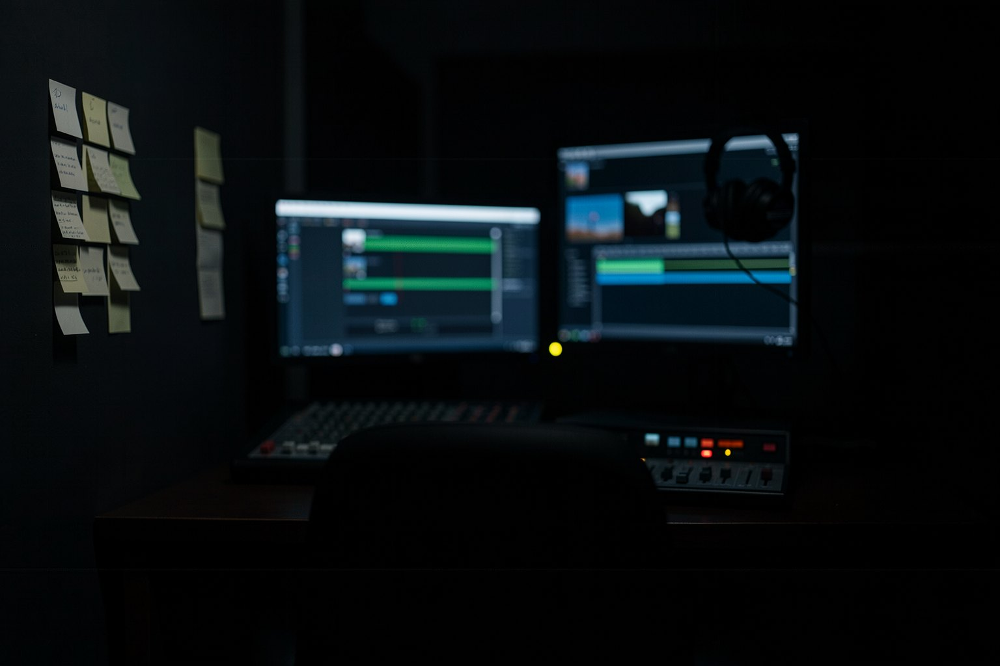
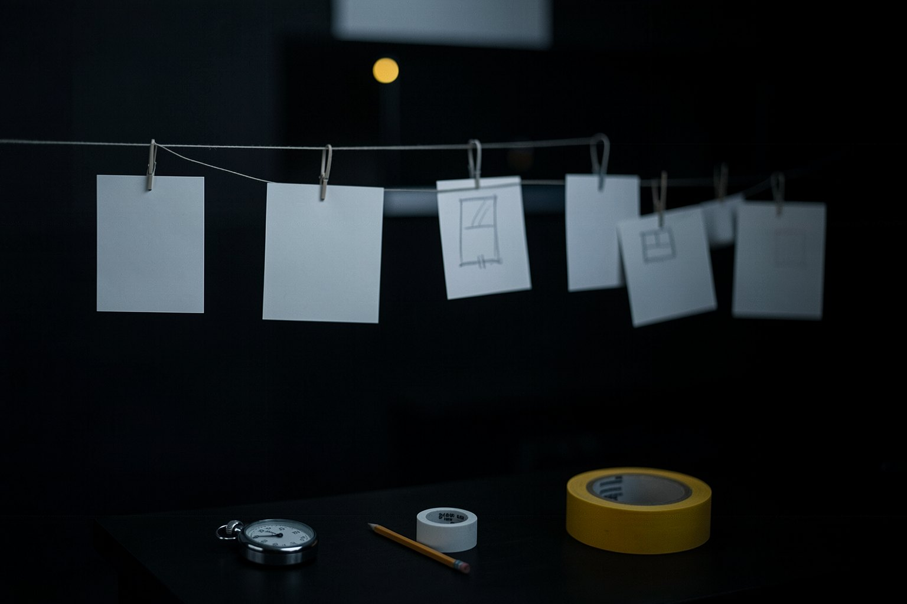
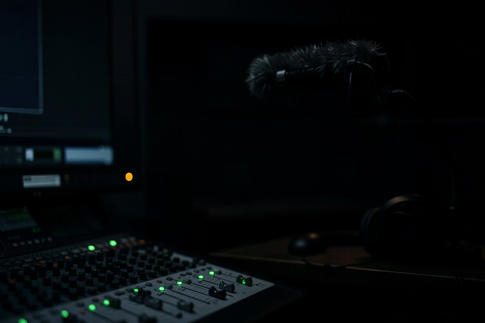
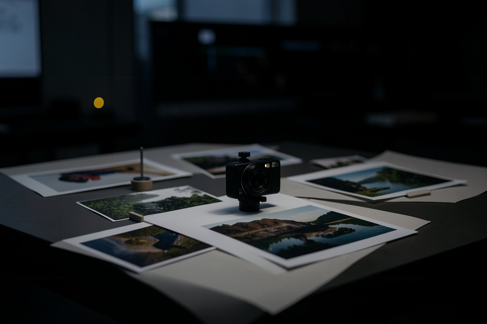

Formação Cinema com IA · curso 2 de 6 · 8 aulas
Produção: do roteiro ao filme pronto, com som, corte, cor e rótulo
Os planos gerados ainda não são um filme. Aqui você decide as batidas e as entregas, o som de cada plano, o corte, a cor, um caminho sem gerador de vídeo, o anúncio e o que a lei pede. Cada aula termina num arquivo que a própria página confere, inclusive o vídeo final, sem terminal e sem gastar crédito.

- 8aulas
- 8arquivos conferidos na página
- 2vídeos conferidos no navegador
- 0crédito gasto
As aulas
A cena do curso 0, "A primeira fornada", vira um curta de 30 a 60 s. Quatro clipes de ensaio vêm prontos, para você montar sem gerar nada.

Aula 1 · 18 minO plano de edição antes de gerar: beat sheet e lista de entregasA decupagem diz o que filmar; o plano de edição diz como o filme corre. Antes de gastar crédito, você decide a função de cada trecho, quanto tempo ele dura, de onde vem cada plano e em que formatos o filme sai. É o mapa que a montagem vai seguir.
Aula 2 · 18 minSom como personagem: diálogo nativo, voz, trilha e efeitosEm 2026 o som deixou de ser o último passo: os principais geradores devolvem ambiente, efeitos e fala junto com a imagem. Isso obriga a decidir, plano a plano, o que nasce com o vídeo e o que entra depois, como a trilha e a narração. Esta aula fecha essa decisão num mapa de som.- Aula 3 · 20 minMontagem e ritmo: cortar, encadear e legendarMontar é decidir onde cada plano começa e termina, como um passa para o outro e o que se lê na tela. Nesta aula você monta os quatro clipes de ensaio da fornada num editor gratuito, põe legenda e confere o arquivo exportado aqui mesmo na página.
- Aula 4 · 17 minCor e acabamento: grading, grão e film lookPlanos gerados em dias e ferramentas diferentes chegam com cores diferentes, e a imagem crua de IA tem marcas: contraste agressivo, cor forte demais, preto chapado. A correção de cor iguala os planos e dá ao filme um look só. Você sai com a receita escrita, que vale para qualquer editor.

Aula 5 · 18 minFilme sem gerador de vídeo: fotos e narração com câmera 2.5DNem todo filme precisa de gerador de vídeo. Fotos reais ou imagens paradas, uma narração e um movimento de câmera bem escolhido por foto já contam uma história, sem crédito e em qualquer máquina. Os clipes de ensaio deste curso foram feitos assim. Aqui você escreve a folha de direção e executa num editor ou com um agente.- Aula 6 · 18 minAnúncio de produto e UGC: as estruturas que funcionam e as linhas que não se cruzamUGC é o anúncio com cara de vídeo de pessoa comum: alguém mostra o produto na mão, fala para a câmera do celular. Com IA dá para fazer sem filmar, e é justamente aí que mora o risco: depoimento inventado passado por real. Esta aula ensina as estruturas e as regras que mantêm o anúncio honesto.
- Aula 7 · 18 minÉtica e lei: rótulo, direito de imagem e voz, licença do modeloAntes de publicar, três perguntas: quem assiste sabe que foi feito com IA? Tudo o que aparece no filme é seu ou autorizado? O que a lei do lugar pede hoje? As leis ainda estão mudando, então esta aula ensina o princípio e dá cada regra com a fonte e a data.
- Aula 8 · 20 minSeu curta de 30–60 s: do plano ao arquivo final conferidoHora de juntar tudo: o plano de edição, o mapa de som, a montagem, a cor e a checklist viram um curta de 30 a 60 segundos. A página confere o arquivo final, e a pasta do projeto guarda o que você decidiu, pronta para refazer o filme em qualquer ferramenta.
Para quem é
- 1Criadores, professores e quem faz vídeo para empresa.
- 2Quem já tem uma decupagem (curso 0) ou já gera clipes (curso 1) e quer fechar o filme.
- 3Quem não usa terminal: tudo se faz no navegador, num editor gratuito e num arquivo de texto.
O que você sai fazendo
- 1Planejar batidas, fontes e entregas antes de gastar crédito.
- 2Decidir o som de cada plano: o que sai junto com o vídeo e o que entra depois.
- 3Montar, legendar e dar cor ao filme num editor gratuito.
- 4Publicar com rótulo e com o direito de imagem, voz e música resolvido.
A formação (6 cursos)
- 10 · Direção: pensar como diretor
- 21 · Geração: imagem e vídeo com IA
- 32 · Produção (este curso)
- 43 · Motion por código com agente
- 54 · A fábrica de vídeo com agentes
- 65 · Sites cinematográficos